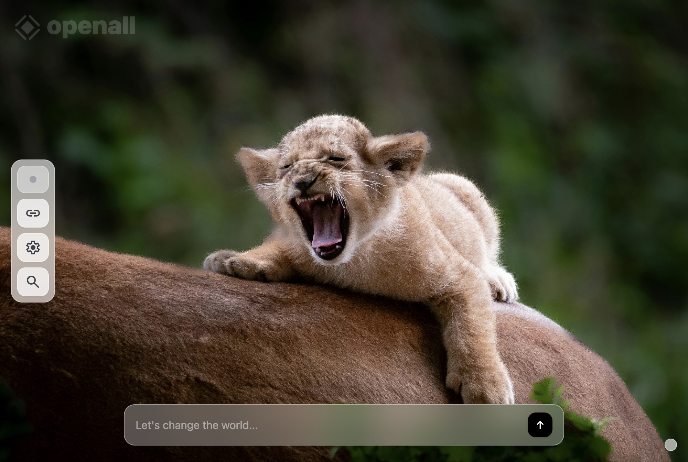
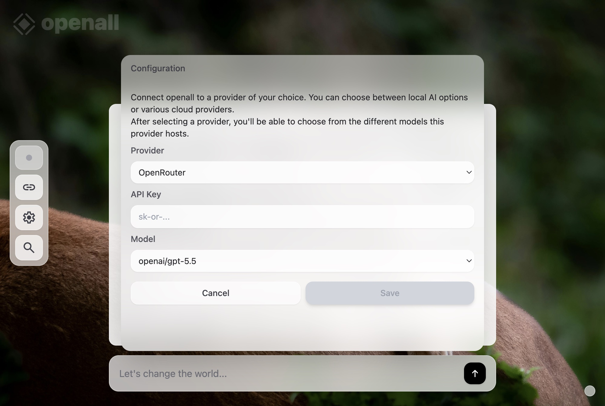
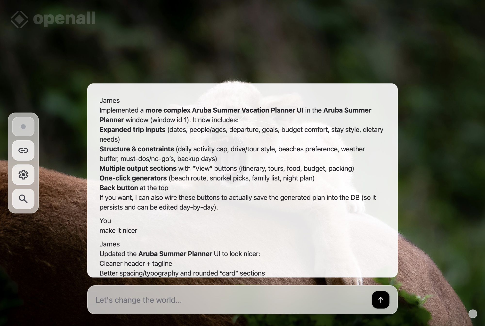
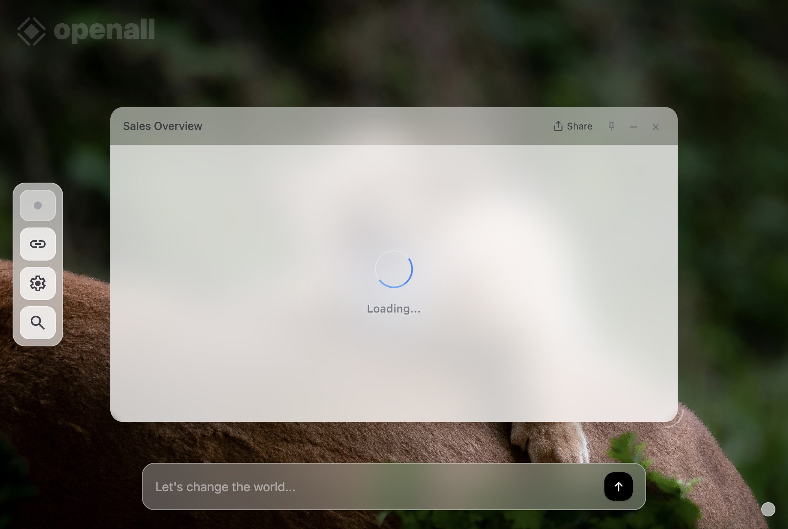
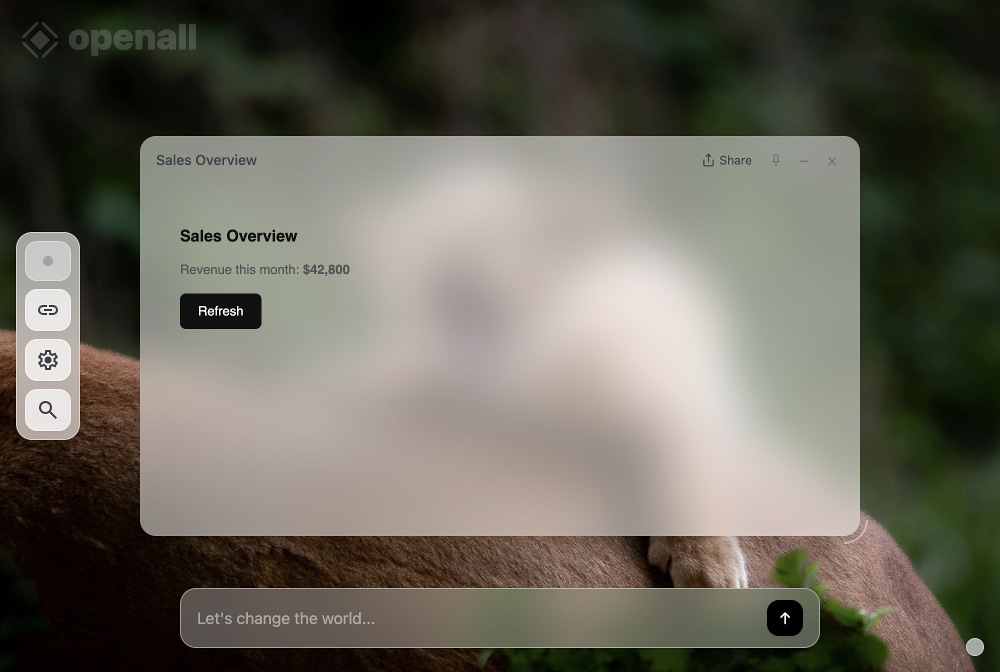
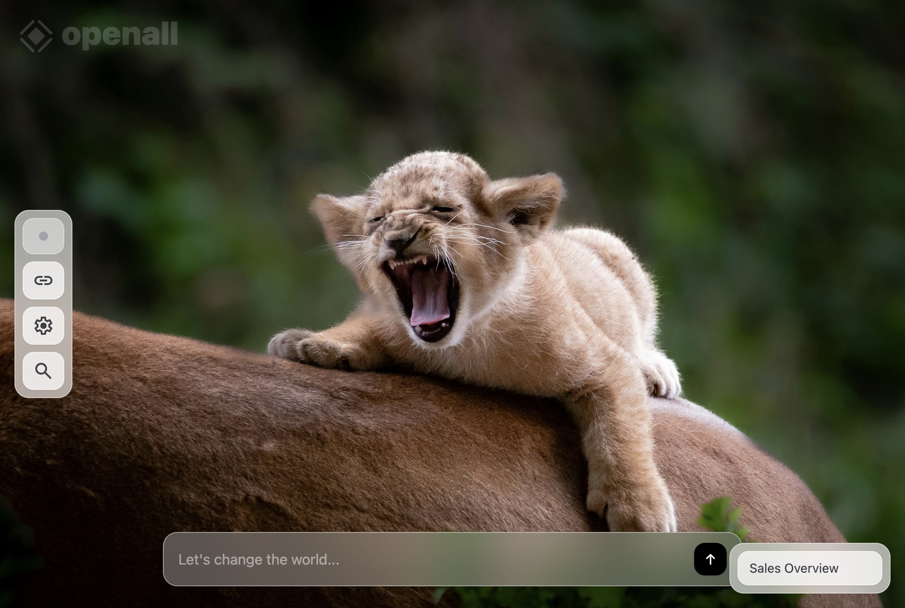
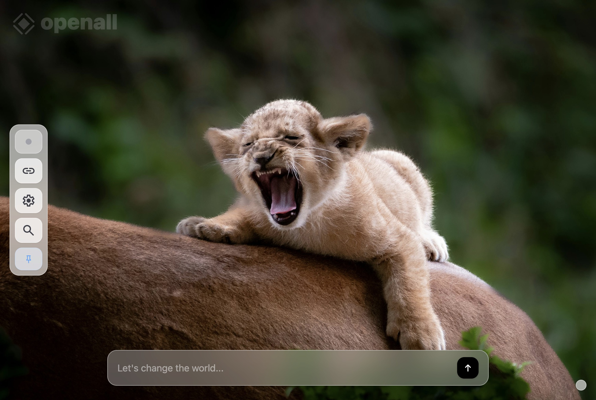
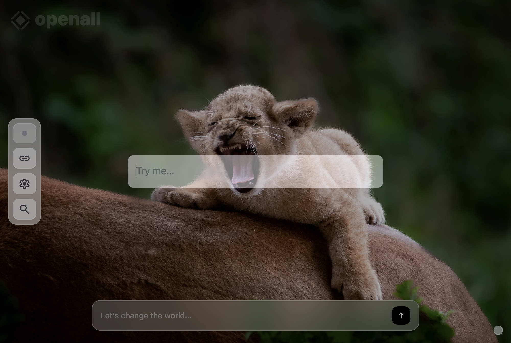
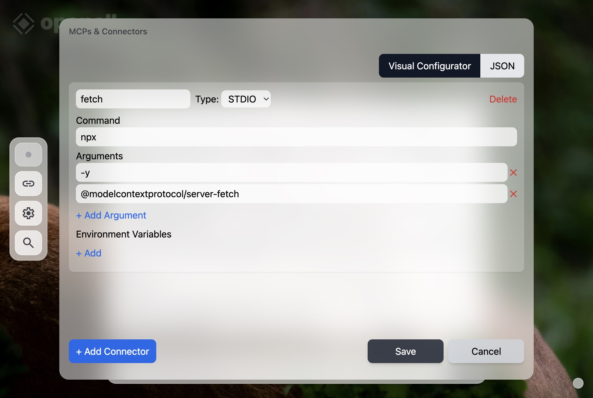

Your first session
with openall
openall is not a chatbot wrapper. There is no application layer — the LLM is the runtime. Every tool you use, every piece of data it tracks, every screen it draws: all of it comes from a single conversation. This guide shows you how.
One screen. Infinite tools.
When openall opens you see a minimal desktop — a background, a left-hand sidebar, and a single chat bar at the bottom. That bar is everything. Every app you'll ever use starts with something you type there.

The sidebar holds four buttons: a status indicator, connectors, settings, and the app launcher. You won't need most of these on day one. Start by clicking the chat bar.
Connect an AI provider
Before anything works you need to tell openall which LLM to use. Click the settings icon in the sidebar (the gear) and choose Configure LLM Provider, or look for the Configuration prompt that appears on first launch.

Pick a provider — OpenRouter is the default and gives you access to dozens of models with a single key. Paste your API key, choose a model, and click Save. You're done with setup.
OpenRouter lets you try models from OpenAI, Anthropic, Google, and others through one account. Get a free key at openrouter.ai.
Just describe what you need
Click the chat bar, type what you want, and press Cmd + Enter (or the arrow button). The LLM reads your request, decides what to build, and replies. A message thread appears above the bar so you can see the conversation.

You can have a full back-and-forth here — ask follow-up questions, request changes, or just say "make it nicer." The LLM remembers the last 30 messages of context.
Apps appear as floating windows
When the LLM decides to build a tool — a dashboard, a form, a tracker, anything — it generates a complete HTML interface and opens it as a draggable window on your desktop. No code to run. No page to navigate to. It just appears.


Every button, form, and table inside the window is live. Clicking something sends the action back to the LLM, which updates the UI and any underlying data in real time.
Managing your open apps
Windows can be dragged, resized, minimized, or closed using the controls in their title bar. Minimizing collapses a window to a small card in the bottom-right corner — it stays accessible without cluttering your view.


You can also pin any window to the sidebar. Pinned apps are remembered between sessions — reopening them shows you the last-saved UI and quietly refreshes the data in the background.
The app launcher
Press the magnifying-glass icon in the sidebar (or use the keyboard shortcut) to open the launcher overlay. Type to search your pinned apps or ask the LLM to open something new — it's the fastest way to jump between tools once you've built up a collection.

Connect external tools with MCP
The connectors screen lets you attach MCP (Model Context Protocol) servers to openall. An MCP server gives the LLM new capabilities — web fetch, browser control, database access, or any tool you configure. Click the chain-link icon in the sidebar to manage them.

Each connector runs as a subprocess. Once connected, its tools are automatically available to the LLM — no extra prompt engineering required.
Tip: the @modelcontextprotocol/server-fetch
connector is a useful first addition — it lets the LLM read any URL
and incorporate live web content into its answers.
A few things to try right now
The best way to learn openall is to ask it for something real. Here are three prompts that show off what it can do:
"Build me a habit tracker. Let me add habits, check them off daily, and see a streak count."
"Create a simple CRM — a form to add contacts with name, email, and company, and a table showing everyone I've added."
"Make a dashboard showing today's date, a motivational quote, and a live weather summary for Tel Aviv." (Requires the fetch MCP connector for the weather call.)